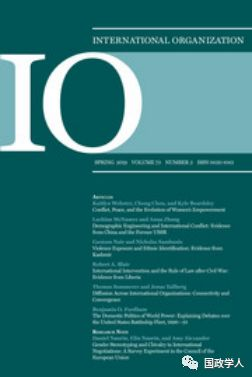
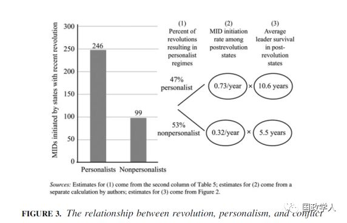

收录于合集

简 介
【作者】 Jeff D. Colgan，布朗大学政治科学系副教授，主要研究兴趣是国际秩序和国际安全的政治经济学，特别关注石油政治、环境政治、战争原因与革命等。Jessica L.P. Weeks，威斯康星大学麦迪逊分校政治科学系副教授，主要研究兴趣是外交政策、威权政治与和平、政治制度和公共舆论等。
【编译】 兰星辰
【校对】 彭小朵 李雯珲
【审核】 丁伟航
【来源】 International Organization ,winter 2015, Vol. 69, No.1, pp.163-194.https://doi.org/10.1017/S0020818314000307
【期刊】 《国际组织》（International Organization），简称“IO”，是一份经过同行评议的季刊，涵盖国际事务的各个领域。它成立于1947年，由剑桥大学出版社代表国际组织基金会出版。2017年的影响因子为4.517，在169种政治学类期刊中排名第2，在85种国际关系类期刊中排名第1

革命、独裁和国际冲突
Revolution, Personalist Dictatorships, and International Conflict
Jeff D. Colgan
Jessica L.P. Weeks
内容提要
经历过革命的国家更有可能卷入和其他国家的军事冲突，学界在这一点上已经达成了共识。但是，学者们仍然在研究何时以及为什么革命将会增加国际冲突的可能性。与现有的关注国际体系因素的研究不同， 本文认为革命引发国际冲突的部分原因是革命影响了国内的政治结构。 具体而言，除了既往研究认为革命将会导致更有侵略性的领导者上台之外，本文强调了革命亦频繁导致独裁统治、或者导致一个缺乏有效的制度以限制和惩罚领导人的政权。造成独裁统治的革命与未导致独裁统治的革命相比，前者政权的独裁者有更强的修正主义偏好和高风险容忍度，并且遭受的限制更少、执政时间更长，因此更有可能挑起国际冲突。
文章导读
革命和国际冲突一直是政治科学中经久不衰的研究主题。本文认为革命后国内的政治结构对国际冲突具有重要的影响。具体而言，通过革命形成的新生政权有可能是独裁政权也有可能是非独裁政权，并且在考虑到掌权的革命领袖更有可能具有修正主义的政策偏好和更高的风险容忍度的情况下， 本文对革命导致国际冲突的机制给出了两个解释：第一，导致独裁统治的革命中，民众和其他革命领导者对于执政的革命领袖的限制很小，因此成为独裁者的革命领袖与未成为独裁者的革命领袖相比，更有可能挑起国际冲突。第二，独裁体制下成为领导人的革命领袖往往比非独裁体制下成为领导人的革命领袖任期更长（非独裁体制下成为领导人的革命领袖往往会被温和派替代），因此也就更有时间和能力应用修正主义的对外政策，挑战现状进而挑起国际冲突。
**1
** 研究假设
** 假设一：在经历了革命的国家，独裁统治和高烈度的对外军事冲突紧密联系**
** 假设二：独裁政权的革命领袖与非独裁政权的革命领袖相比，更有可能挑动国际冲突**
** 假设三：导致了独裁政权的革命与未导致独裁的革命相比，前者的革命领导人将会在革命后执政更长时间**
其中，第一个假设是本文的中心假设，第二和第三个假设 是 解释第一个假设的机制。
**2
** 研究设计和数据
1.1 解释变量
本文研究的时间段是1946年2000年，解释变量具体可以分为两个。在界定这两个解释变量之前，本文首先界定了 “ 革命”（ R **EVOLUTION ）**和 **“革命领袖”（ REVOLUTIONARY LEADER）**两个变量，本文将革命有无定义为一个二元变量分别是1和0。革命使用了两个标准来界定。第一个标准是政府是否是通过军事力量、大规模民众示威等方式上台。第二个标准是上台的新政府是否改变包括财产权、政教关系、意识形态、国名和象征等7个领域在内的国内的经济、政治和社会制度。当新政府改变了7个领域中的3个领域，它就被界定为“革命性的”（revolutionary）。另外，由于界定革命的困难和一部分国家革命性质的模糊性（ambiguous revolutions），本文把这部分不易界定的国家也挑选出来，并随后进行了稳定性检验。革命领袖这一变量主要测定国家的领导人是否通过领导革命上台，如果是通过革命上台则被编码为正。在界定了这两个变量的基础上，本文的第一个解释变量是 “ 后革命时期”（ P OSTREVOLUTIONARY PERIOD ），以10年为标准，即在过去10年里经历过革命的国家被编码为1，否则为0，随后本文也以8年和12年为标准进行了稳定性检验。第二个解释变量是 “ 独裁”(personalist dictatorship)，本文界定政权是否为独裁政权主要关注了政权的八个国内政治的特点。 “ 革命 ” 、“ 革命领袖 ” 、“ 后革命时期 ” 这三个变量的数据 来源于本文作者之一的 Jeff D. Colgan建立的数据集，“ 独裁 ” 这一解释变量的 数据来源于另一位作者 Jessica L.P. Weeks建立的数据集， 这个变量 的缺省值主要结合 Gedds，Wright和Frantz（GWF）的数据集来补充，所有的数据可以在本文的网上附录中获得。
1.2 被解释变量
为检验假设1和假设2，本文根据 军事冲突（ Militarized Interstate Di s **putes ，MIDs）**数据集，选择的第一个被解释变量是 军事冲突（ INITMID），并在所有军事冲突中又特别挑选出了造成至少一名军事人员死亡的高烈度的致死性军事冲突 （ I NITFATAL ），采用负二项模型进行统计分析，并综合使用双变量和单变量分析进行稳定性检验。为检验假设3，本文选定的第二个解释变量是 任期（ TENURE），即领导人执政时间。
1.3 控制变量
本文选取的控制变量主要来自于应用MIDs数据集的一系列研究，它们包括军事实力(CAPABILITIES)、联盟情况(ALLIANCES)、地理位置相邻(CONTIGUITY)、内战(CIVIL WAR)、贸易依赖度和开放度(TRADE INTERDEPENDENCE AND OPENESS)，并进行了一系列检验。各控制变量在双边量分析和单变量分析的不同界定可以参考原文。
**3
**
总体结论
由于本文的变量界定和检验比较复杂、具体结果可以参考原文，主要结论参考下图3

具体而言，尽管独裁和革命都各自独立地增加了政权发动国际冲突的可能性，但与革命后形成的其他类型政权相比， 革命后新生的独裁政权 挑起国际冲突的可能性更高，它在革命后的十年内发动和介入了约 **71% （246/345）**的国际冲突。另外，革命后新生政权有 47% 是独裁政权，在独裁政权执政的革命领袖平均每年挑起国际冲突的比率远高于在非独裁政权执政的革命领袖（0.73vs0.32），革命后新生的独裁政权的革命领袖执政时间 平均为 10.6年 ， 高于非独裁政权的 5.5年，上述三个假设在单变量和双变量分析中都得到验证。本文的结论有助于打开国内政治要素影响国际冲突的黑箱，揭示了革命后形成的政权类型和领导人权力等对国际冲突的重要影响。
_ ** _ 本文由国政学人微信平台独家编译首发**
更多阅读
【重磅速递】约瑟夫·奈：美国霸权的兴衰：从威尔逊到特朗普 | 国政学人
【重磅推荐】巴里·布赞：英国学派视角下的中国崛起 | 国政学人
【重磅速递】米尔斯海默：注定失败：自由主义国际秩序的兴衰 | 国政学人
【国际组织】IO杂志：联合国维和行动的武力运用问题研究 | 国政学人